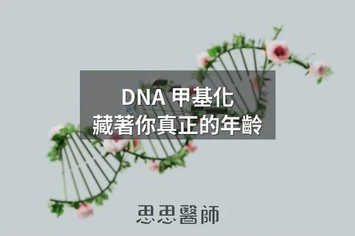
DNA 甲基化，藏著你真正的年齡
2026-10-06
DNA甲基化會隨老化出現表觀遺傳漂移，目前只有飲食、睡眠與代謝介入等生活方式被證實能減緩甲基化老化速度。

50 篇文章

DNA甲基化會隨老化出現表觀遺傳漂移，目前只有飲食、睡眠與代謝介入等生活方式被證實能減緩甲基化老化速度。
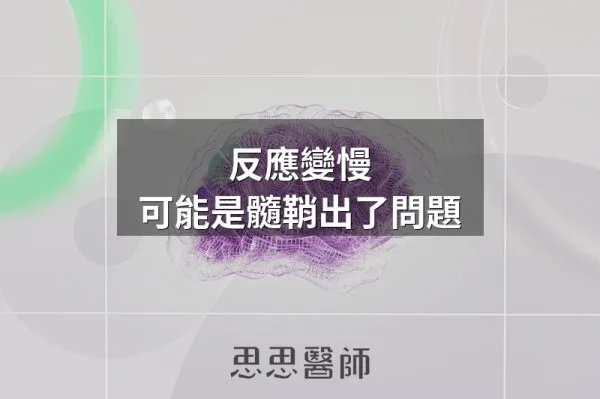
髓鞘決定神經訊號傳導速度，修補能力會隨年齡下降，學習、睡眠、油脂與鐵都影響髓鞘，作者也提到鋰、近紅外光與 citicoline。

GHK-Cu 是隨年齡下降的銅螯合物，能改變 31% 的基因表現、促進組織修復並具抗發炎作用，但目前注射劑無合法管道。

PhenoAge 用九項常規血液檢查推算生物年齡，比表觀遺傳時鐘便宜得多，能預測死亡率且能透過飲食干預改善。

不同波長的光透過觸動生色團激活特定的細胞信號，藍光殺菌但影響褪黑激素、紅光與近紅外線能提升粒線體能量生成。

中低強度有氧運動、間歇性斷食、充足睡眠能保護粒線體功能，而長期酗酒、睡眠不足、慢性壓力則會直接損害粒線體結構。
耐力運動增加粒線體數量有氧容量，阻力運動強化粒線體代謝功能，混合訓練對粒線體品質管控最佳。

過量進食導致粒線體電子傳遞鏈電子堆積，形成超氧化物自由基增加氧化壓力，直接損傷粒線體DNA。

糖化終產物不只來自糖，高溫烹調的蛋白質與脂肪也會產生 AGEs，所以控糖者也要注意烤、炸等烹調方式，並減少頻率。

骨頭是內分泌器官，造骨細胞分泌的骨鈣素參與血糖調控，需維生素 K2 活化，糖尿病患者骨密度正常仍可能有較高的骨折風險。

甲基乙二醛（MGO）的糖化能力約為葡萄糖的兩萬倍，血糖尚未達糖尿病標準時就可能累積，控制血糖波動並支持麩胱甘肽有助降低累積。

Valter Longo 的研究指出，50 至 65 歲高蛋白飲食與較高死亡率相關，因 mTOR 長期活化可能加速老化，65 歲以上則需吃夠蛋白質。

女性睪固酮從三十幾歲開始下降，停經後進一步下降，不足會影響肌肉、骨密度、認知與情緒，單獨補充雌激素無法解決。

心臟衰竭、老化的肌肉無力、記憶退化。三件看起來不相關的事，在細胞層面可能有同一個根源。2025 年 9 月，FDA 核准了史上第一個以「修復心磷脂」為機轉的藥物 elamipretide（SS-31）。

文中整理 Gundry《腦腸悖論》的觀點：腸道菌透過短鏈脂肪酸、血清素與內毒素影響粒線體，建議以多酚等飲食保護粒線體。

116歲全球最長壽者Ethel不和人爭論而按自己意思生活，慢性心理壓力加速皮質醇升高造成胰島素阻抗，自主感和複雜認知活動如橋牌降低壓力激活副交感神經。

夜間生長激素、皮質醇降低和褪黑激素的抗氧化作用共同推動皮膚修復和更新，睡眠品質直接影響膚況。

Omega-7特別針對上皮細胞和皮脂腺，能修補皮膚和腸道黏膜的屏障損傷，改善皮膚保水能力。
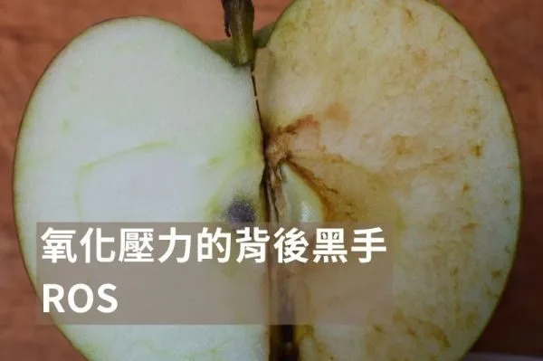
ROS 是一群反應力強的氧分子，既是正常代謝與免疫防禦所需，長期偏高才造成氧化壓力，關鍵在於「剛剛好」而非越少越好。
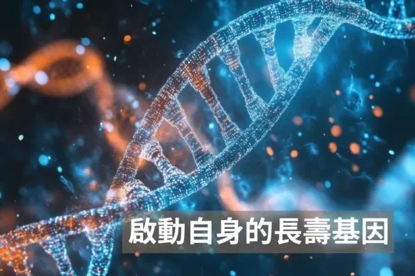
長壽基因Sirtuin靠NAD⁺驅動，可透過間歇性斷食、運動、NMN補充及多酚食物激活，但睡眠與飲食節律才是關鍵開啟條件。

引用 Nick Norwitz 的觀點，演化目標是繁衍而非長壽，所以順應自然不等於最佳健康，需要補足維他命C並控制尿酸這類演化遺留的缺口。
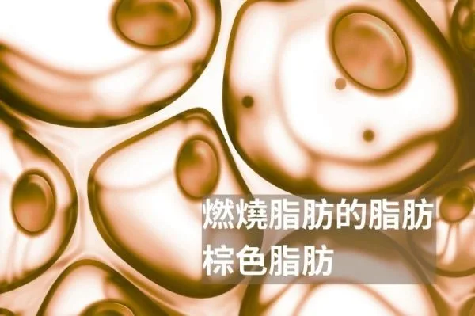
棕色脂肪燃燒能量穩定血糖，可透過冷適應、間歇性斷食、多酚食物、運動與規律睡眠來增加其活性。

天然蝦紅素從雨生紅球藻來源、穿透血腦屏障、抗氧化力遠超維生素C和E，對心血管、神經退化和運動表現都有保護。

紅光和近紅外線光透過移除粒線體呼吸鏈中的一氧化氮抑制、激活細胞防禦系統，提升ATP生成和細胞韌性，對衰老和退化性疾病有保護作用。

長基因轉錄退化導致隨年齡增加較長基因的表現下降更明顯，與高蛋白飲食攝取帶來的代謝負荷密切相關。

蘿蔔硫素透過啟動 Nrf2 路徑提升體內解毒酵素，並保護粒線體功能，對代謝與免疫防護具保護價值。
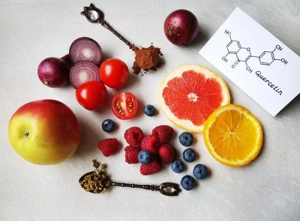
槲皮素是天然類黃酮植物色素，具有抗發炎、抗氧化和抗癌效果，能強化腸道細胞並改善整個腸道菌叢。

NAC 除了化痰外，還能透過提升穀胱甘肽、抑制發炎與破壞生物膜，對粒線體保護有重要輔助作用。

Metformin 透過提升 AMPK 與促進粒線體生物合成，在正確使用下可望具有抗老化與抗發炎潛力。

整理 Martin Picard 的 TED 演講重點：健康取決於能量與細胞間的溝通，情緒與心理狀態會影響粒線體表現，身心並非分開。

斷食能在短時間內大幅降低胰島素濃度，刺激自噬、改善胰島素阻抗與免疫力，但不建議頻繁進行超過72小時的長斷食。

Nrf2是人體最強大的抗氧化防禦機制，能活化多種抗氧化酶，透過飲食和生活方式調整可增強其功能。

睪固酮參與肌肉生長與心理健康，可透過重量訓練、充足睡眠、壓力管理與適度陽光曝曬等方式自然提升。
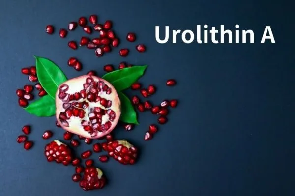
尿石素A由腸道菌群將石榴中的鞣花酸轉化而來，促進線粒體自噬、延長肌肉壽命、保護大腦，動物實驗顯示可延長壽命19%。
肌酸是安全有效的補充品，能提升運動表現與認知功能，素食者補充可顯著改善記憶力，建議日攝取3-5克。
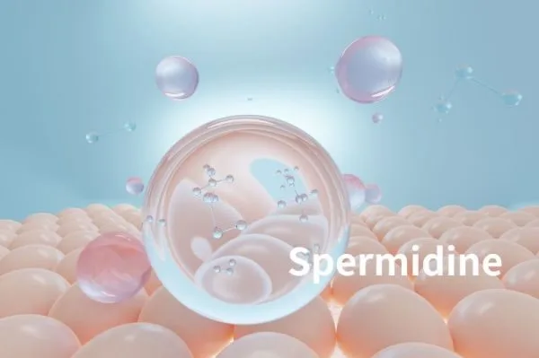
亞精胺隨年齡遞減，促進自噬、保護心血管和神經、增強免疫，蘑菇是優秀來源，補充劑安全劑量每日可達40毫克。
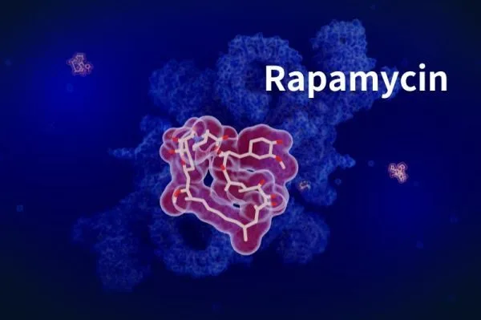
Rapamycin能在多種生物中延長壽命，通過抑制mTOR、增強自噬、降低發炎改善免疫，但長期效果和副作用仍需更多研究確認。
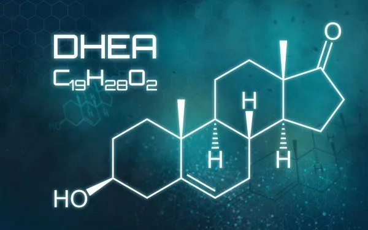
脫氫異雄固酮與肌肉強度、骨質、性功能相關，隨年齡下降，可透過壓力管理、飲食調整和運動維持正常水平。
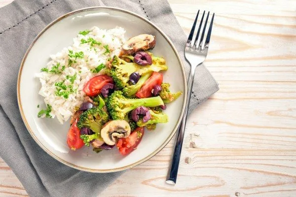
斷食模仿飲食每月5天低熱量攝取可能減少生物學年齡約2.5歲，但生活習慣改善仍是長期健康的基礎。
尼爾·馬里諾是六十多歲的巴西健身模特，因嚴格的健身和健康習慣而保持年輕的外貌和結實健美身材。

作者主張戒糖是改善健康的第一步，指出糖與多種疾病有關、會損害粒線體並有成癮性，不吃甜食也不代表沒攝取糖，澱粉同樣會轉成糖。

亞甲藍是由德國化學家在一八七六年發現的藍色物質，從染料發展為現代醫學的重要工具，具廣泛應用。

綠茶含咖啡因、L-茶氨酸和兒茶素，每天飲用三至五杯能提升代謝和認知功能降低多種癌症風險，但孕婦日咖啡因需限制。
AMPK是細胞能量低時啟動的代謝控制激酶，參與脂肪、糖質與蛋白質代謝及自噬，運動、減少熱量與多酚可活化它，進食與胰島素阻抗則會抑制。

紅光與遠紅外光能刺激粒線體產生能量，改善睡眠、減輕疼痛與憂鬱，每週3至5次、每次10至20分鐘較為適宜。
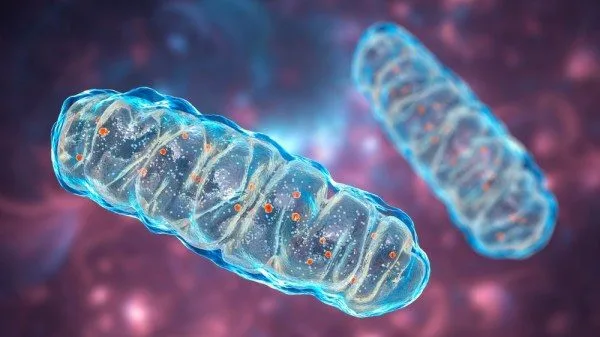
改善粒線體功能的八個方法包括間歇性斷食、多酚、纖維、發酵食品、多胺食物、冷熱刺激及紅光療法，這些方式都能促進粒線體解偶和代謝靈活度。
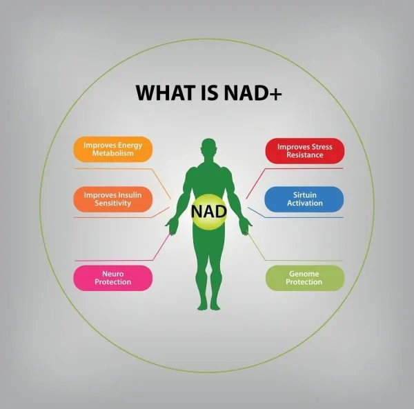
NAD是輔酶掌管修復DNA與產生能量，隨年紀減少，可透過降低發炎、補充菸鹼酸與菸鹼酵母延緩老化。
腦源性神經營養因子(BDNF)掌管神經元生長與神經可塑性，可透過運動、充足睡眠、學習與抗發炎飲食提升。

糖化最終產物(AGEs)在高溫烘烤食物中產生，引發慢性發炎與器官老化，應採蒸燉方式烹飪並減少糖澱粉攝取。
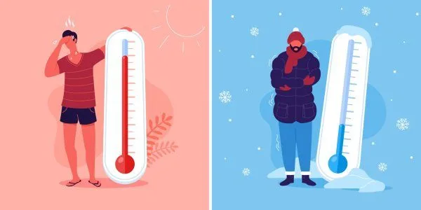
熱療與冷療都能增強免疫力，桑拿建議週2-3次每次15-20分鐘，冷療宜在早上進行以活化棕色脂肪。